Ansarada insights email
Client: Ansarada
/ design systems / product designI was the first product designer to join Ansarada working in a distributed team. I joined them at the time where the company was re-strategising as an AI driven company. There were a lot of features needed a refresh to reflect a smarter feel and integrate new functions. I worked on several new features that spearheaded this refresh.
-
Evolving Ansarada design language
‘Insights Email’ was a weekly email that was sent to our users to inform their stakeholders’ engagement by tracking their activity on our platform.
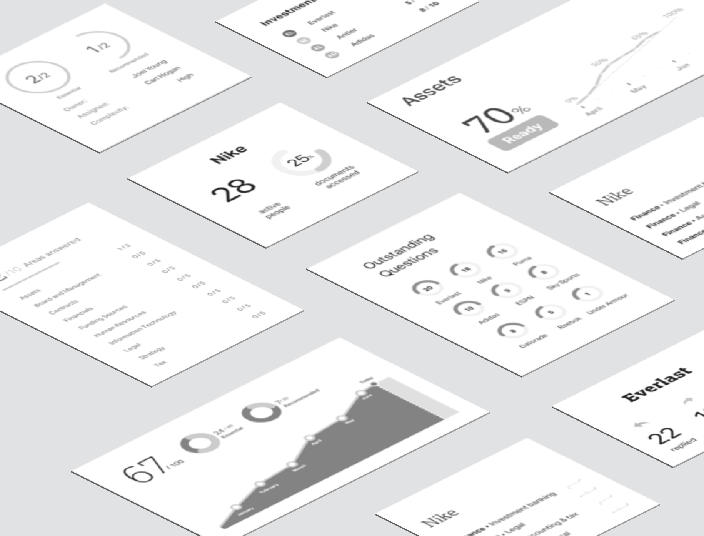‘Insights Email’ was a weekly email that was sent to our users to inform their stakeholders’ engagement by tracking their activity on our platform. While the product was successful, the data science team have produced a single universal metric — called the “Bidder Health Check” . The score improves users’ experience by helping them gain insights without having to plough through multiple report cards though an email. This was the first time the company was integrating machine learning results into its product and our CEO was keen to release this as part of our rebranding strategy. This required a new set of designs that reflected this thinking as well as taking into account where we were heading in terms of visual branding. I was product designer of the team who brought this experience to life.
Legacy constraints
The existing design language had a distinct look and layout rules. This was great for assembling simple pages rapidly but presented many constraints for richer data and visualisation displays.
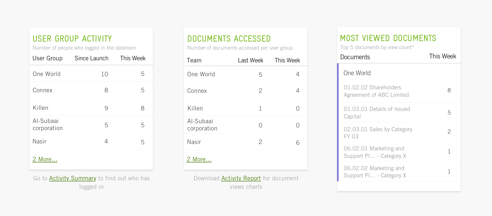Adapting a new look
Even though the new brand was not fully formed yet, I decided to try out my designs using the new brand to see if it helps resolve the constraints I was facing in terms of layout and overall visual harmony. The new brand uses a completely new set of font – Lexia /Aktiv Grotesk that is tighter reflects a different mood.
I spent some time applying the new design principles onto some of our current products to understand how we could transform into the new framework but still maintaining overall coherence. From these experiments, I picked out a few key principles and styles and presented them back to the design team. Once we were happy with these upgrades, I carried on with my task, which is to come up with the new insights email design which is now known as the “Bidder Engagement Score”.
Redesigning legacy components
Apart from how things look, I recommended a redesigning a few design components as they were no longer fit for our purpose. I made sure I built a clear case on how these new components should be used clearly communicated them with our lead interface architect.
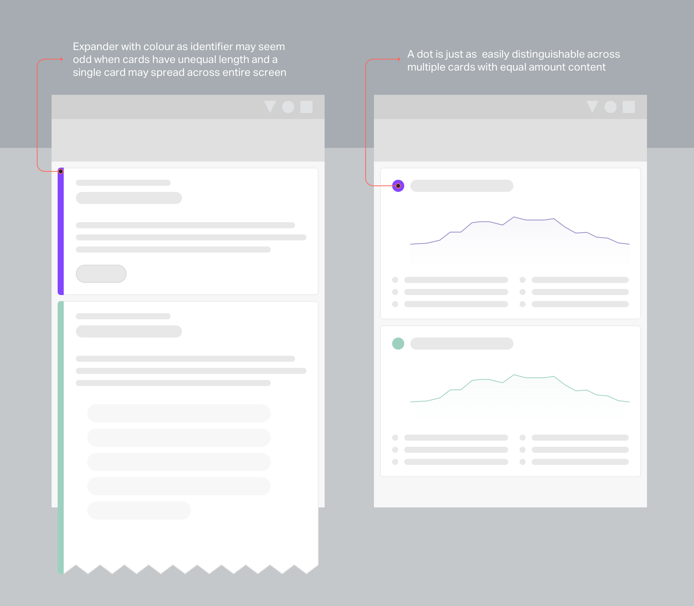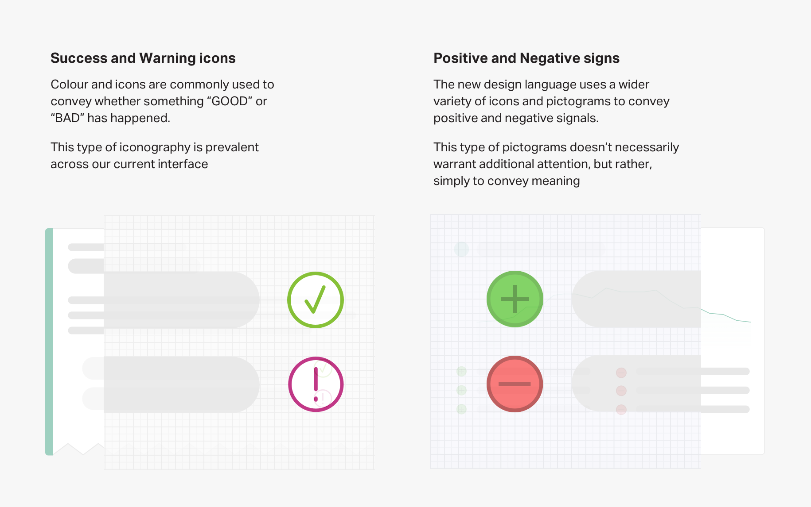Infographic component
When it came to specifying guidelines for the trand chart, I made sure I balanced style with a logical layout. The challenge with laying out a chart for the viewer is being able to highlight key metrics while keeping the x and y axis tickmarks visible. A lot of thinking went behind finding the right interval for the tickmarks as the accounted period increased, without breaking our grid system.
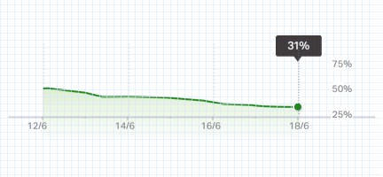
-
Decoding insights
The email was supposed to tell stakeholders how likely are their clients able to submit a bid, at a glance. Even though predictive results may not be 100% accurate, I tried my best to ensure our message was reflected clearly in the design.
The key thing was to help our viewers understand why the predictions turn out the way they were. And more importantly, making sure there are enough visual cues to help viewers confirm their gut feel about an outcome.
The hero chart was the single element that told the bulk of the story. The daily breakdown gives the viewer mental checkpoints whether certain events should have happened.
And if something didn’t align with their assumption, the “positive and negative” drivers were supposed to further support those predictions. Using the right terminology for these predictors was something I advocated for since the beginning. Having worked on and with many analytical stakeholders in the past, it was vivid to me that explaining the “why” behind the number is just as, if not more important than the “what”.
In this example, it was critical that we distinguished these factors as events that drove the predictive score “positively” or “negatively”. The initial iteration uses an “up” and “down” arrow without clear messaging and many people thought it was simply saying that these activities have decreased in volume, which is not the case.
By changing it to a "positive(+)" and "negative(-)" sign, people were less likely to misunderstand the intent behind it and were more open to the fact they were drivers rather than results.
-
Data visualisation and numerals style guide
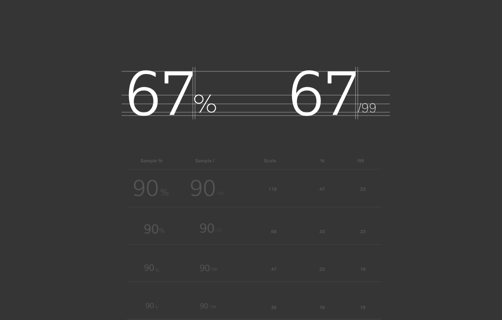Numerals can also be expressed in many forms to create a consistent and distinct viewing rhythm. Do Treat the number like a symbol, giving them sufficient padding and white space.
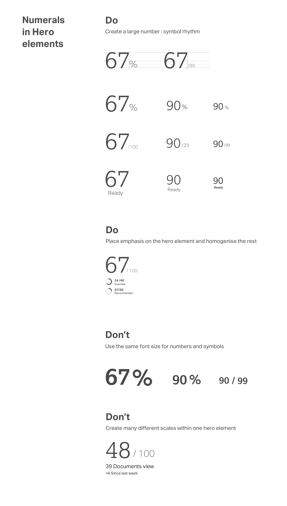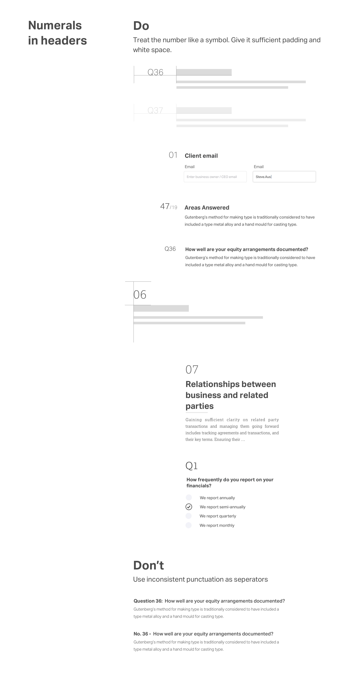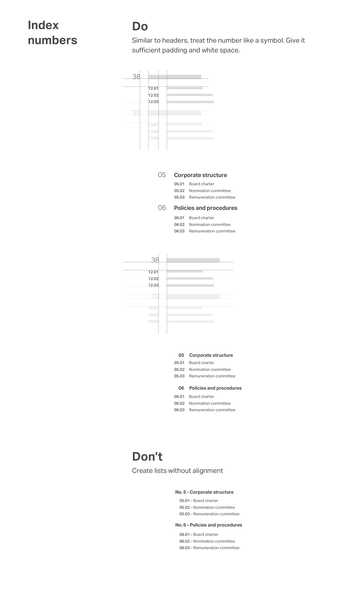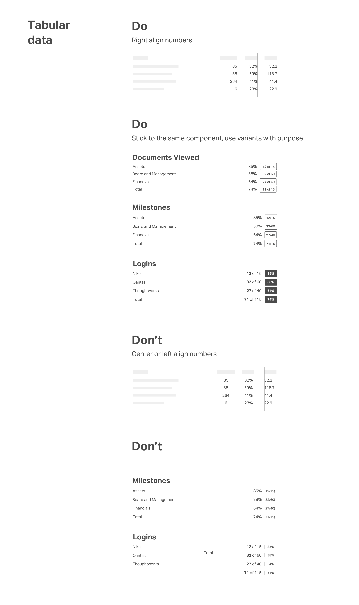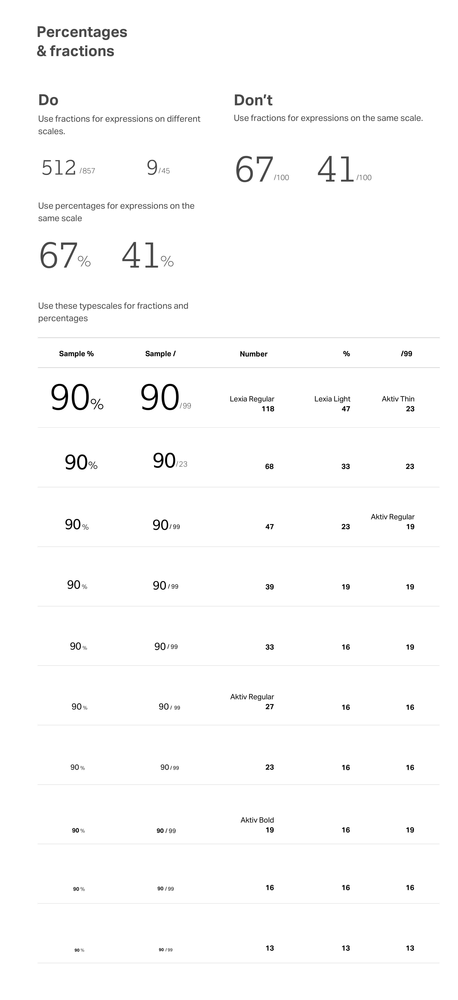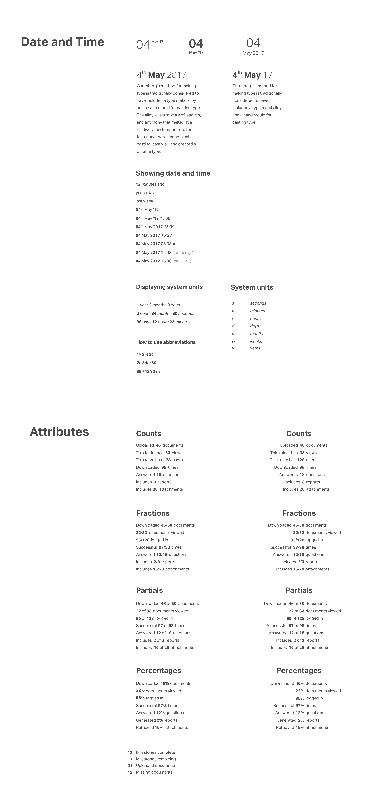
Up next

Map search
prototyping / develop

Single sign on
prototyping

Simo indoor map
research
Melbourne city's bikeability
data analysis